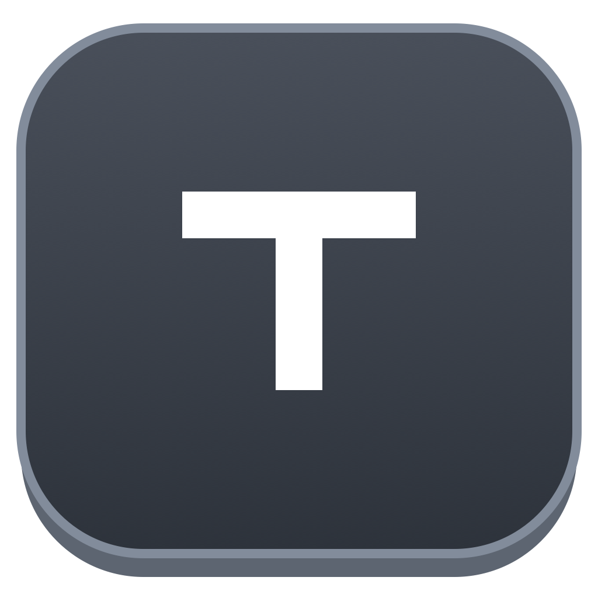

Talkist
Dead-simple local dictation for macOS and Linux. Install, hold a hotkey, talk, release. No configuration required. No cloud ever.
curl -fsSL https://danieldelaney.net/talkist/install.sh | sh

Dead-simple local dictation for macOS and Linux. Install, hold a hotkey, talk, release. No configuration required. No cloud ever.